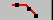
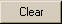
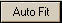
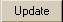

BSDF (b): Maximum BSDF value (at specular); determines
the height of the plateau.
Slope (S): Asymptotic fall-off with angle (slope),
typically between -1 to -2.5.
Shoulder (l): Rollover point location in radians.
Optional roughness parameters are defined by the ASAP HARVEY
model.
TIS: Total Integrated Scatter, expressed as a percentage.
Combined TIS: Total Integrated Scatter of model 1 plus
model 2, expressed as a percentage.
Panel Buttons:
: This
Points button fits the Harvey model based on points selected in the Graph
window.
First point designates the approximate maximum BSDF value
height).
Second and third points define the slope and the fall-off
location.
Most of the angular range of data (from the specular angle)
falls on the slope.
Clear
: Deletes the current values for a
model.
Autofit :
opens the Autofit Parameter dialog
box.
Update
 : Updates the Graph window, using
the sum of the two Harvey models.
Spin boxes: text boxes with up and down arrows that you
click to move through a set of fixed values. You can also type a valid value in
the box.